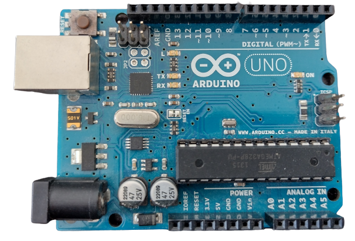

¿Que son las figuras geometicas?
Una figura geométrica es una combinación de puntos, líneas y planos, que delimitan una superficie.
Las figuras geométricas tienen características que las hacen únicas, como son los elementos que la conforman, su forma, su extensión, sus propiedades y su posición relativa.
Así los elementos que conforman una figura geométrica plana son: sus lados, vértices y ángulos, la cantidad de estos elementos, determinará el tipo de figura geométrica:

CREADO POR: ESTRADA ALEGRIA PAULA
SEGUNDO SEMESTRE - INTELIGENCIA ARTIFICIAL